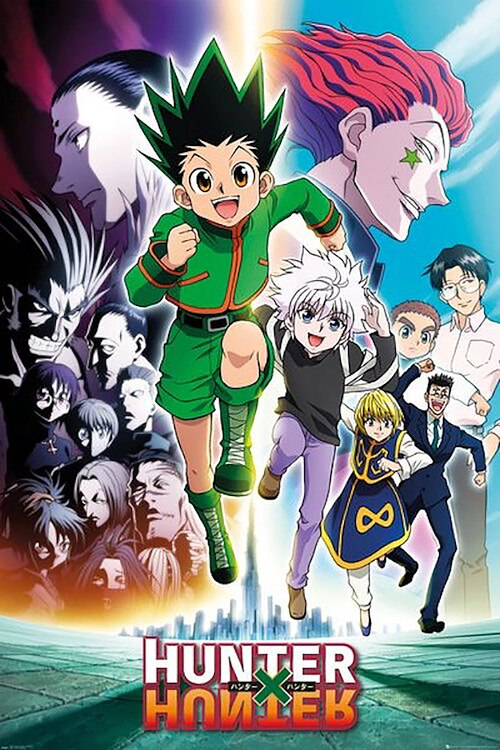

1. Death Note

Death Note is a Japanese manga series written by Tsugumi Ohba and illustrated by Takeshi Obata. The story follows Light Yagami, a teen genius who discovers a mysterious notebook: the "Death Note", which belonged to the Shinigami Ryuk, and grants the user the supernatural ability to kill anyone whose name is written in its pages.
2. Naruto

Naruto is a Japanese manga series written and illustrated by Masashi Kishimoto. It tells the story of Naruto Uzumaki, a young ninja who seeks recognition from his peers and dreams of becoming the Hokage, the leader of his village.
3. Demon Slayer
Demon Slayer: Kimetsu no Yaiba is a Japanese manga series written and illustrated by Koyoharu Gotouge. It follows teenage Tanjiro Kamado, who strives to become a demon slayer after his family is slaughtered and his younger sister Nezuko is turned into a demon.
4. Fairytail

Fairy Tail is a Japanese manga series written and illustrated by Hiro Mashima. It was serialized in Kodansha's Weekly Shōnen Magazine from August 2006 to July 2017, with the individual chapters collected and published into 63 tankōbon volumes.
5. Fullmetal Alchemist

In the fictitious country of Amestris, two young brothers, Edward and Alphonse Elric, are bestowed with the gift of alchemy - the supernatural ability to transform matter. This becomes a burden after their mother dies from an illness before they figure out how to use their alchemic skills.
6. Great Teacher Onizuka

Great Teacher Onizuka, officially abbreviated as GTO, is a Japanese manga series written and illustrated by Tooru Fujisawa. It was originally serialized in Kodansha's Weekly Shōnen Magazine from January 1997 to February 2002, with its chapters compiled into twenty-five tankōbon volumes.
7. Dragon Ball
Dragon Ball is a Japanese media franchise created by Akira Toriyama in 1984. The initial manga, written and illustrated by Toriyama, was serialized in Weekly Shōnen Jump from 1984 to 1995, with the 519 individual chapters collected into 42 tankōbon volumes by its publisher Shueisha.
8. Welcome to demon school! Iruma Kun
Welcome to Demon School! Iruma-kun is a Japanese manga series by Osamu Nishi. It has been serialized in Akita Shoten's shōnen manga magazine Weekly Shōnen Champion since March 2017. As of August 2021, the series has been collected in twenty-three tankōbon volumes.
9. Hunter x Hunter
Gon Freecss is on a mission to train himself as a hunter just like his father. He reunites with his father, who is alive and an accomplished hunter too.
10. One Punch Man
One-Punch Man is a Japanese superhero franchise created by the artist ONE. It tells the story of Saitama, a superhero who can defeat any opponent with a single punch but seeks to find a worthy opponent after growing bored by a lack of challenge due to his overwhelming strength.